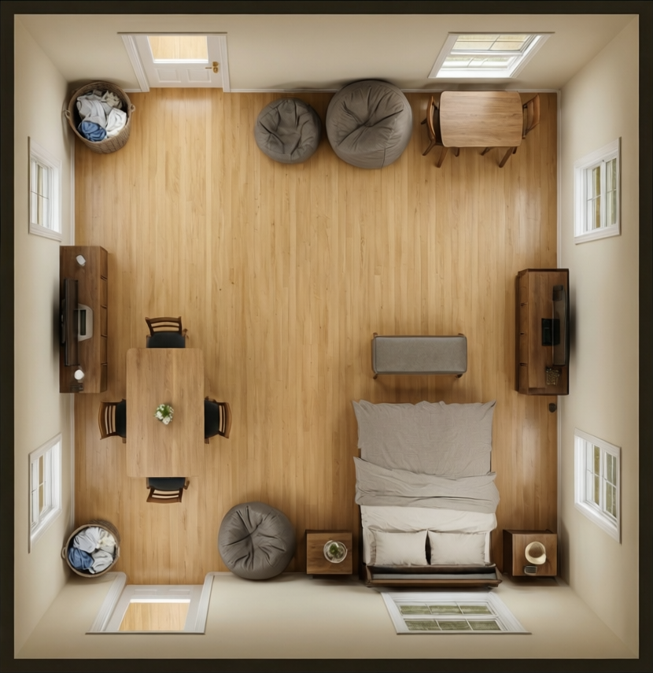
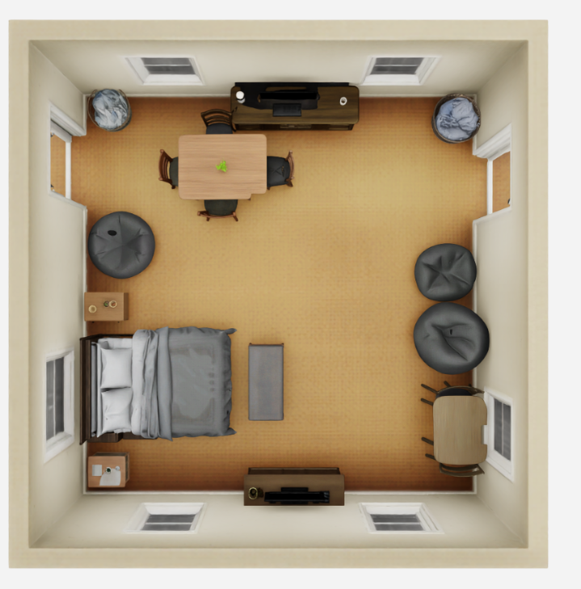
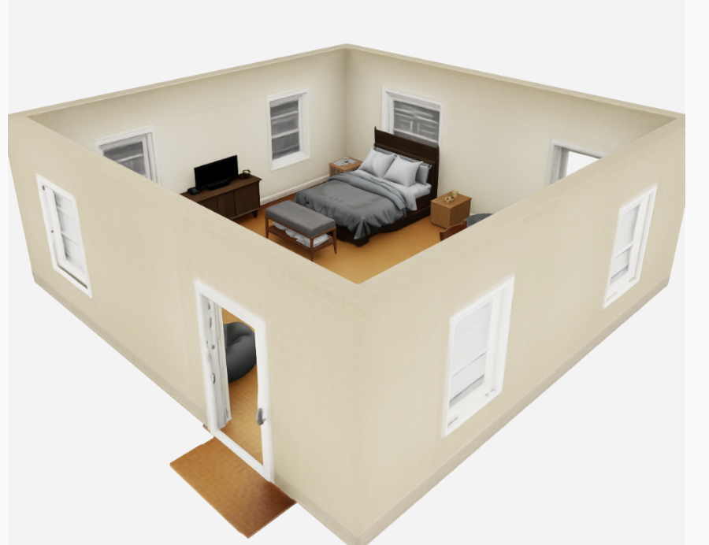
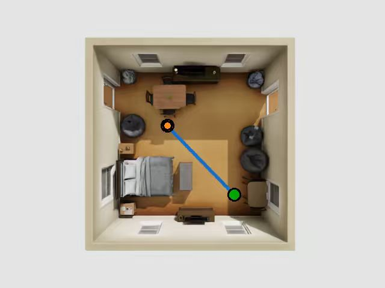

Object-to-Scene Distillation: Automatic and Scalable Training Data Generation
Left: an overview of the complete self-distillation process. Right: the data curation stage. We adopt Trellis.2 as the object generator from which training data are distilled. A VLM first generates descriptions of 3D assets, including objects and environments; these descriptions are then used to generate the corresponding input images for Trellis.2. After obtaining the 3D assets, we place them into the generated environments with physics checks and render conditioning images for each scene.
Unified Scene Representation: Scene Frame Generation with Object-Centric Refinement
Left: the environment and objects are jointly generated in a shared scene frame through two stages, sparse structure generation and geometry-latent generation. Right: each generated object is transformed to a local voxel support for scene-conditioned refinement and then placed back into the scene using the inverse transformation.
Interactive Demo
Select an input image, then open the preview when needed.
Note that this 3D scene is a compressed preview version, approximately 10% of the original generated result. Please refer to results for the detailed result.
Select an input image to load its preview.
Rendered Demo
Select an input image, then show the video when needed.
Video is hidden until you click Show video.
Scene-to-Navigation Simulation
Because DistScene generates compositional 3D scenes with environmental context, the generated scenes can be directly imported into navigation simulators.

Input image

Generated scene 1

Generated scene 2

Navigation simulation 1Navigation simulation 2
Navigation demo 1Navigation demo 2
Acknowledgements
We thank Jingyu Hu and Nianjin Ye for the navigation simulation, and Yanting Li for demo visualization.